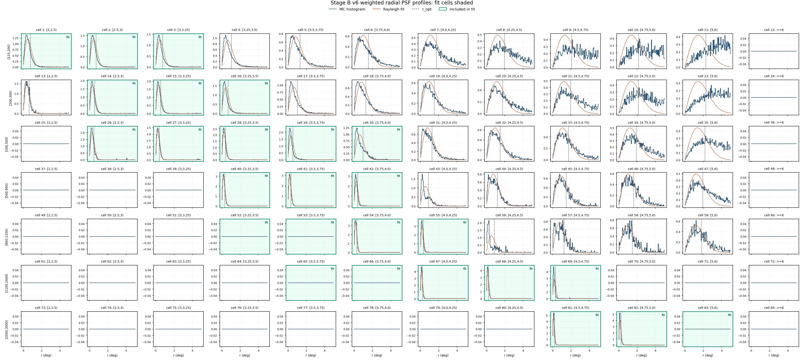

This report closes the v6 roadmap run on /mnt/mydisk/WCDA_observation_eval_64670. The v4 baseline physics contract is preserved where possible, while every model-dependent MC, response, PSF, signal, fit, and SED artifact is rebuilt under v6 names with the theta_recoxy_position_embed_midenergy_no_core_cut_64670 model generation.
Comparability caveat. v6 is not a drop-in statistical update of v1-v5. Observation predictions and MC response products use a different trained model generation. The v4 comparison table below is diagnostic for scale and shape only; it should not be read as a same-response systematic shift.
Executive Result
Stage C files
3,969/3969
missing time 0; entry mismatch 0
Selected rows
79,958,631
configured-cell rows after match-status and cell cuts
Rough live time
125.65 d
source-visible n/a d
Stage E signal
68.81 sigma
N_on 376,450; B_on 335,797
Preferred Stage F
LOGPAR
chi2/ndof 352.5/23
LogPar phi0
n/a
alpha n/a, beta n/a
Gate
Status
Evidence
Phase 0 eval/time coverage
pass
3969/3969 files processed; entry mismatches=0; bad match-status rows=724
Phase 1 MC cache
pass
10,000 MC files, 3,525,301 inferred events, v6 `_64670` provenance present
84 cells written; 52 warning rows, 8 in the 26 fit cells
Stage A aperture-conditioned response
pass
primary_thrown_aperture_conditioned_response; v6 PSF path recorded
Stage C observation reduction
pass
79,958,631 selected configured-cell rows; rough live time 125.654 d
Stage D annulus background
warning
23 / 84 cells have warnings; 0 warning rows are in the 26 fit cells; current promotion intentionally blocked
Stage E signal
pass
quality passed; total formal sigma 68.805
Stage F/G fit and SED
pass
preferred logpar fit; Stage G is diagnostic-only and physical
Dataset And Provenance
The full Stage C run uses /mnt/mydisk/WCDA_observation_eval_64670 with recovered-time friends from /mnt/mydisk/WCDA_observation_eval_64670/recovered_time. Source file coverage spans 0101/Esg20220101_00.root through 0630/Esg20220630_23.root, corresponding to 2022-01-01 through 2022-06-30.
Nominal Stage A is a primary_thrown_response; the final fit uses primary_thrown_aperture_conditioned_response. Both metadata files record the v6 MC candidate cache and the _64670 run dir, and the aperture-conditioned metadata records the v6 PSF NPZ path.
Stage B wrote 84 PSF rows. It recorded 52 warnings, including 8 cells in the v4 fit subset, mostly for sparse cells that fall back to the Rayleigh default. Fit-cell coverage is complete and all fit-cell r_opt_deg values are finite and positive. In the radial-profile grid, pale green panels mark the 26 cells entering the baselinev4 fit.
Stage B v6 r_opt by candidate cellStage B v6 effective events by candidate cell

Stage B v6 radial PSF profiles; green panels enter the fit
Stage C-D-E Diagnostics
Stage C selected 79,958,631 configured-cell rows from 254,205,212 input entries. The Crab-centered ROI diagnostics estimate an edge around 7.05 deg, so the downstream fiducial rho<6 deg choice remains inside the observed coverage. Stage D produced the annulus-normalized quadratic ROI-local background, but did not promote current because ROI-local background warnings remain in sparse or fragile cells. Stage E used the explicit Stage D run path and passed the total-sigma quality gate.
Metric
Value
Stage C rough live time
125.654 d
Stage C rho<6 rows
20,336,070
Stage D warning rows
23 / 84
Stage D warning rows in fit cells
0 / 26
Stage E total N_on
376,450
Stage E total B_on
335,797
Stage E total excess
40,652.7
Stage E formal sigma
68.8051
Stage D ROI excess gridStage D annulus residual diagnosticsStage E formal sigma grid
Stage F Fit
Stage F uses the v6 aperture-conditioned Stage A response, the v6 containment-1 annulus-normalized signal, and the v4 drop4 selector. The fit is physically valid, but cell-level chi2 is still large; the report should be used as an analysis diagnostic rather than a publication result.
Fit
Valid
chi2/ndof
p
phi0
gamma/alpha
beta
PL conservative
True
513.1/24
3.148e-93
n/a
n/a
n/a
LogPar conservative
True
352.5/23
9.952e-61
n/a
n/a
n/a
PL sqrt-N
True
907.3/24
4.182e-176
n/a
n/a
n/a
LogPar sqrt-N
True
598/23
1.189e-111
n/a
n/a
n/a
Cell
Bin
Excess
Err
LogPar model
Pull
1
[125,200)[2,2.5)
-804.2
360
3005
-10.6
2
[125,200)[2.5,3)
8565
452
8235
0.73
3
[125,200)[3,3.25)
1430
219
1316
0.522
14
[200,300)[2.5,3)
7434
216
6121
6.07
15
[200,300)[3,3.25)
3897
148
2630
8.56
16
[200,300)[3.25,3.5)
1126
119
816.2
2.59
26
[300,500)[2.5,3)
1651
93.3
2231
-6.22
27
[300,500)[3,3.25)
4044
110
3897
1.33
28
[300,500)[3.25,3.5)
2519
90.1
2379
1.55
29
[300,500)[3.5,3.75)
707.1
63.3
661.6
0.719
30
[300,500)[3.75,4.0)
270.7
69.8
197.9
1.04
40
[500,800)[3.25,3.5)
1750
60.3
1999
-4.13
41
[500,800)[3.5,3.75)
1328
51.5
1479
-2.93
42
[500,800)[3.75,4.0)
414.7
30.9
411
0.12
52
[800,1100)[3.25,3.5)
286.5
55.3
267.1
0.351
53
[800,1100)[3.5,3.75)
815.1
108
791.6
0.219
54
[800,1100)[3.75,4.0)
446.6
28
516.7
-2.51
55
[800,1100)[4.0,4.25)
163
17.7
126.2
2.08
65
[1100,2000)[3.5,3.75)
90.58
29.1
132.2
-1.43
66
[1100,2000)[3.75,4.0)
363.4
68
402.7
-0.578
67
[1100,2000)[4.0,4.25)
307.5
20.7
298.5
0.436
68
[1100,2000)[4.25,4.5)
151.4
15
97.74
3.58
69
[1100,2000)[4.5,4.75)
72.83
10.9
17.1
5.11
81
[2000,3000)[4.5,4.75)
12.06
4.68
11.85
0.044
82
[2000,3000)[4.75,5.0)
8.946
6.25
5.718
0.516
83
[2000,3000)[5,6)
-13.19
43.1
1.083
-0.331
Stage F model counts versus observed excessStage F LogPar pull gridStage F theta exposure
Stage G Diagnostic SED
Stage G is explicitly diagnostic-only. It freezes the Stage F LogPar spectrum with phi0=2.5323e-12, alpha=2.689, beta=0.1431 at 3 TeV. It writes 7 Nhit points and 11 predicted-energy points.
Nhit group
Cells
E_eff TeV
E2 dN/dE
Err
chi2/ndof
StageF ratio
Full-array PL ratio
[125,200)
1;2;3
0.5654
4.0389e-11
2.309e-12
101/2
0.836
0.671
[200,300)
14;15;16
0.8602
5.5777e-11
1.264e-12
16.52/2
1.29
1.24
[300,500)
26;27;28;29;30
1.351
3.5371e-11
7.031e-13
43.49/4
0.981
1.07
[500,800)
40;41;42
2.675
2.2045e-11
5.371e-13
2.727/2
0.895
1.07
[800,1100)
52;53;54;55
4.251
1.6558e-11
8.125e-13
9.118/3
0.94
1.11
[1100,2000)
65;66;67;68;69
8.14
1.0825e-11
5.654e-13
38.98/4
1.09
1.13
[2000,3000)
81;82;83
45.41
1.3148e-12
4.527e-13
0.3328/2
1.08
0.451
PredE group
Cells
E_eff TeV
E2 dN/dE
Err
chi2/ndof
StageF ratio
Single cell
[2,2.5)
1
0.3232
-1.3920e-11
6.231e-12
9.9744e-32/0
-0.268
True
[2.5,3)
2;14;26
0.6646
4.7521e-11
1.127e-12
75.3/2
1.02
False
[3,3.25)
3;15;27
1.224
4.2454e-11
9.429e-13
49.7/2
1.13
False
[3.25,3.5)
16;28;40;52
2.061
2.7744e-11
6.697e-13
23.18/3
0.959
False
[3.5,3.75)
29;41;53;65
3.413
1.9117e-11
6.550e-13
4.614/3
0.919
False
[3.75,4.0)
30;42;54;66
5.703
1.2686e-11
5.822e-13
4.086/3
0.919
False
[4.0,4.25)
55;67
9.795
8.9269e-12
5.130e-13
2.806/1
1.08
False
[4.25,4.5)
68
16.89
7.0000e-12
6.928e-13
0/0
1.55
True
[4.5,4.75)
69;81
30.9
4.0178e-12
7.048e-13
18.64/1
1.92
False
[4.75,5.0)
82
61.86
1.1943e-12
8.343e-13
0/0
1.56
True
[5,6)
83
102.8
-4.0716e-12
1.329e-11
1.7009e-33/0
-12.2
True
Stage G v6 SED overlayStage G v6 SED ratiosStage G cell grouping counts
Diagnostic v4 Comparison
The table compares v6 Nhit SED points against the v4 aperture-conditioned drop4 baseline. It is included to satisfy the roadmap comparison requirement, but the trained energy model and v6 MC response generation differ from v4, so the ratios mix physics/statistics with model-generation effects.
Generated by apply/report/build_v6_64670_report.py. Output names are v6-isolated; no v1-v5 output directory is used as a v6 input except the explicit diagnostic v4 comparison section.